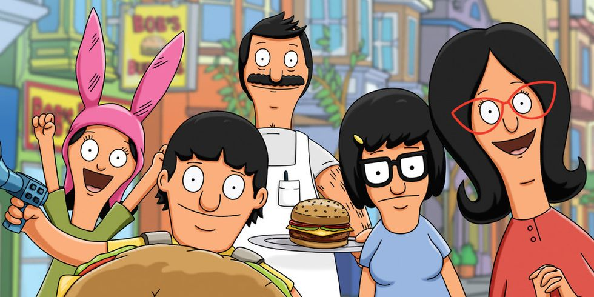

<section id="genes">
	<div id="geneTop"></div>
	<h2>Gene Belcher</h2>
	<a class="home" ui-sref='home'><i class="fa fa-home" aria-hidden="true"></i>Home</a>
	
	<div class="each">
    	<ul ng-class-even="'orange'" ng-class-odd="'purple'" ng-repeat="gene in genes | filter:search">
    		<li class="quote">Gene: "{{gene.quote}}"</li>
    		<li class="episode">Season {{gene.season}}, Episode {{gene.episode}}</li>
    		<div class="quotesRow row">
    			<div class="column small-3">
    				<label for="geneLikes"> <i class="fa fa-thumbs-up" aria-hidden="true"></i> {{gene.likes}}</label>	
    				<a id="geneLikes" ng-click="likeIt(gene)" class="button small round like">Like</a>
    			</div>
    			<div class="likeBtns column small-3">
    				<label for="geneDislikes"> <i class="fa fa-thumbs-down" aria-hidden="true"></i> {{gene.dislikes}}</label>	
    				<a id="geneDislikes" ng-click="dislikeIt(gene)" class="button small round like">Dislike</a>	
    			</div>
    			<div class="top column small-6">
    				<a class="top" ng-click="scrollTo('geneTop')"><i class="fa fa-arrow-up" aria-hidden="true"></i> back to top</a>
    			</div>
    		</div>
    	</ul>
    </div>
</section>